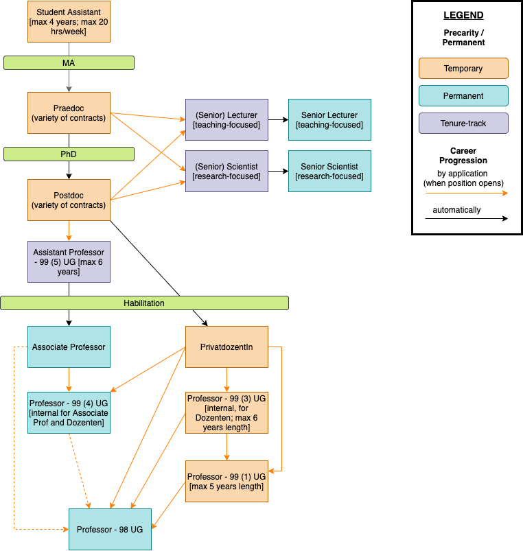
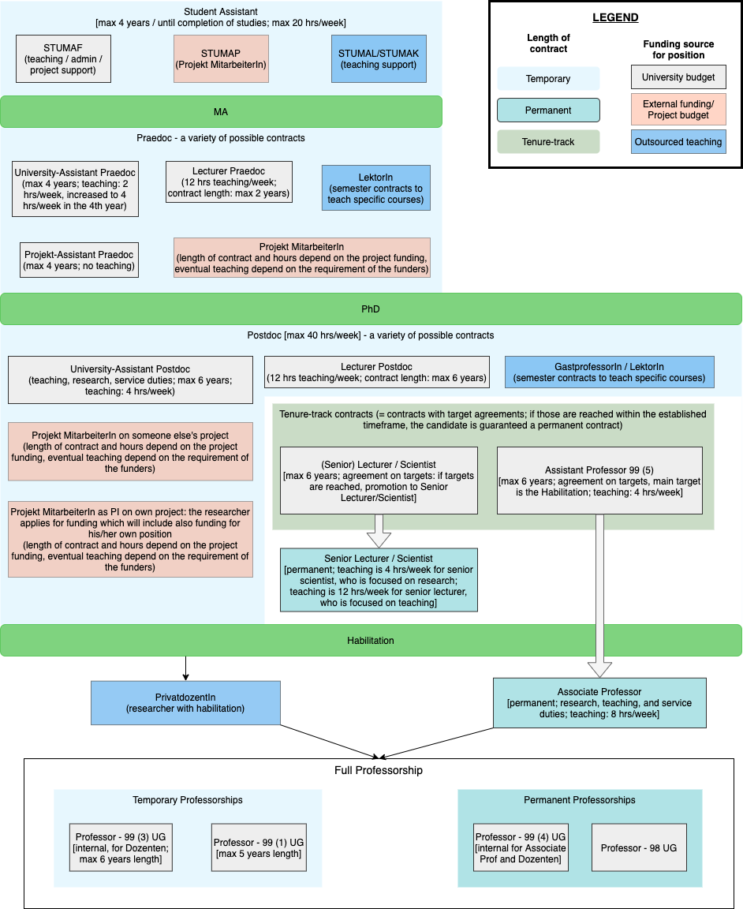

This section will first offer an overview of academic career paths in Austria, and then it will detail it through the case of the University of Graz.
The following image summarises the steps in an academic career in Austria. Students can get involved in research projects during their degrees and after their MA, they might choose to continue working in academic research. At this level, they will be employed as praedocs - differently from other systems, the praedoc status does not require that the researcher should also be pursuing a PhD. Researchers can work as praedoc (with a pay increase after their 4th year) on subsequent research projects. However, at one point, they might decide to pursue also a PhD: in this case, besides contracts as Project assistants (Praedoc Projekt MitarbeiterIn), they might also be able to apply for specific grants to support them during the PhD. In the praedoc phase, there can therefore be a multiplicity of situations and contracts (see more under the menu 'PhD' for practicalities of doing a PhD in Austria).
Once the PhD is completed, there is again a variety of possibilities and contracts. Postdocs might be hired by the university, with teaching and research duties, or they might be hired through a third-party grant. In this case, they might be working as postdoctoral project assistants for established PIs (e.g. postdoc on an ERC Grant) to grants won directly by the postdoc (such as FWF projects; Marie Curie postdoctoral fellowships; etc. - you will find more information under the 'Postdoc' tab). The precarity encountered during the Praedoc and Postdoc phase is common across countries and systems, so that researchers at this stage might often be moving between institutions and places.
In Austria, there are three main tenure-track routes, i.e. temporary contract that - if positively fulfilled - will lead to a permanent contract. These are considered 'Qualifizierungsstelle' and the candidates will sign a 'Qualifizierungsvereinbarung' in which the objectives they need to reach, so to get a permanent contract, are explicitly listed - and the progression towards these objectives is regularly evaluated during the qualification period. These are: senior lecturer (for teaching-focused positions), senior scientists (for research-focused positions), and assistant professors 99(5) UG (for teaching and research positions). In certain cases, it is possible to apply for pre-tenure lecturer and scientists positions already at praedoc stage: in this case, the completion of the PhD will be the main requirement for promotion to permanent senior lecturer/scientist. These two permanent positions guarantee employment, either with a higher teaching workload (and less research responsibilities) or with a focus on research (and consequently less teaching duties). Postdocs can then choose to complete an Habilitation, in order to be able to apply for full professorships roles. Once someone obtains an Habilitation they become PrivatdozentIn, a title that denotes how they have received the 'venia legendi' (permission to teach) which comes with a succesful Habilitation. In the case of assistant professors 99(5) UG, the Habilitation is usually the main requirement towards tenure (i.e. a permanent contract). In this case, once an assistant professor 99(5) UG completes their Qualifizierungsvereinbarung, he/she will obtain a permanent contract as Associate Professor.
Everyone with an Habilitation can apply for full professorships roles. However, in Austria, there are a series of such roles - again with a division between temporary and permanent contracts. A further division is between professorships open to everyone and professorships open only to staff already employed by the university. Due to these possibilities, there are: temporary professorships for internal candidates - 99(3); temporary professorships for everyone - 99(1); permanent professorships for internal candidates - 99(4); permanent professorships for everyone - 98. In addition, there are also professorship 99a UG, temporary positions with a very limited hours/week, which are given to internationally recognised researchers: through these honrary appointments, universities can strenghten their profile and international networks. There are also other types of professors from the sytem preceding UG 2002 (e.g. Ao.Prof. and o.Prof), which have been given until the early 2000s, and are still in use (they will disappear when current professors with those titles will retire).
If the image above shows the career path for Austrian academics, the image below focuses on the possible contracts at the University of Graz, in particular for MA students, Praedocs, and Postdocs. From this image, it should also become clearer how an academic career can privilege teaching, research, or be a combination of both. Similarly, this image also shows the importance of external funding for covering some positions in opposition to positions which are planned at university and department level because of specific needs.
Student assistants can be employed through three main contracts, although the conditions are almost the same: what changes between those roles is the source of the funding. A STUMAP is employed thanks to external funding for a research project; STUMAFs, STUMALs and STUMAKs are employed from the departmental budget to help in specific admin tasks (and to a lesser extent to support teaching). Student assistants can work maximum 20 hours/week, in parallel to their studies.
Praedoc can again be hired through internal budget, with fixed-term contracts as - e.g. assistants to a full professor or teaching specific courses. More temporary teaching needs, e.g. a single module, can be satisfied by hiring someone to teach *just* that course, i.e. a LektorIn. Again, praedocs can be hired as research assistants on externally funded projects, which had accounted for praedoc positions in their budgets. In all cases, praedocs can work maximum 75% of their time (30 hours/week) - with the remaining time supposed to be dedicated to the PhD thesis (if a praedoc is enrolled in a PhD programme).
The situation is similar at postdoc level, however, this phase is also more competitive - often a postdoc needs to win a grant so to fund his/her own position (so, they would be PI on their project and hire Projekt MitarbeiterIn). In addition, at postdoc level begins the possibility of obtaining tenure-track contracts. Finally, postdocs might choose to write an Habilitation, in order to be able to apply for permanent professorships afterwards. It is, however, also possible to continue working on subsequent grants: in this case, the researcher will become an expert PI and regularly applying for more funding so to keep on funding his/her position.
